General-Information
The car is known as the
(Tuscani, Tiburon, and Coupe). In the Middle East, it was
called the Coupe, in Europe and America, it was known as the Tiburon,
and in Korea, it was released as the Tuscani.
When the car was first released in 2003, which was the new rebuild,
everything about it was changed, including the chassis. Everything was
different from the old Coupe or the first generation. It was only
available as a V6 and was named as Tuscani Elise GT. This
was the main version of the car released at that time.
After Hyundai released this version, the car saw some success and
gained popularity due to its design, among other factors. At that
time, Hyundai released the 2000cc version and 1600cc version as an
official version available in Europe and America and called
Tiburon. Even in Greece, when the car was released, a
1.6L turbo version was introduced, with a small turbo on the old
1600cc engine. This version wasn't very popular and was also released
in Romania as a 1.6L turbo.
Now,Let's moving on to the real differences between the two cars:
📌 Is the difference just in the engine? Can you simply swap one
engine for another🤔? When we look at the car, we find that there are
many differences. Yes, it has the same chassis and the same platform,
similar to BMW cars where the same chassis can be used with different
engines. The platform is designed to accommodate engines ranging from
1600cc to 2700cc, including the V6. However, there are some
differences.
1 *First of all:* The front suspension is different. The
manual transmission for the V6 is completely different from the one in
the 1600cc or 2000cc versions.
2 *Secondly:* There are many different parts underneath,
including the left control arm, different drive shafts, and other
components with different dimensions than those found in the 1600cc
version.
3 *Thirdly:* The shocks are different, but you can swap
them, though this might cause some issues like the car sitting
slightly lower than normal, and the engine might move around. You
could overlook this, but the load-bearing on the shocks is quite
different.
4 *Fourthly:* The fuel pump's pressure rating is
completely different. The pressure for the 1600cc and 2000cc versions
won't work on the V6. There are many mechanical differences in the
car, and there are also differences in the available options across
different models. As for the car's acceleration, it varies by more
than a full second due to the different engine versions, ranging from
7.5 to 9 seconds
Source :
Ahmed Salem
Introduction
This car is Hyundai Tiburon, known in Europe as Hyundai Coupé. The
word "tiburon" is in Spanish, which means "shark", which is the
well-known name for the American, Australian, New Zealand, South
African and Austrian versions of this car. It was also known as
"Terballs" and "Tuscany" in the South Korean market . It is a compact
sports car produced by the South Korean company Hyundai. It was
produced between 1996 and 2008, and achieved great fame thanks to its
attractive design and good performance. In this article, we will
review the history of this distinctive car in detail.
Car Models
First Generation
-
Hyundai launched the first generation of the coupe in 1996. It
was in production from 1996 until 2001. The car was designed in
cooperation with the Italian company Pininfarina, giving it an
elegant, sporty touch as well as the next models.
Motors And Power of First Model
-
1.6L I4 Engine:
- Engine Type: Beta I4
- Horsepower: 114 hp
-
1.8L I4 Engine:
- Engine Type: Beta I4
- Horsepower: 130 hp
-
2.0L I4 Engine:
- Engine Type: Beta I4
- Horsepower: 140 hp
Second Generation
-
Hyundai launched the second generation in 2002 with a more
modern, streamlined design. The design was based on the "HCD-II"
concept model. The car received a design update that included a
new front grille, updated headlights and taillights, and
performance improvements. In 2007, the car was updated again
with changes to the front end and bumpers, in addition to
interior improvements.
Motors And Power of Second Model
-
1.6L I4 Engine:
- Engine Type: Alpha II I4
- Horsepower: 105-107 hp
-
2.0L I4 Engine:
- Engine Type: Beta II I4
- Horsepower: 140-143 hp
-
2.7L V6 Engine:
- Engine Type: Delta V6
- Horsepower: 167-172 hp


 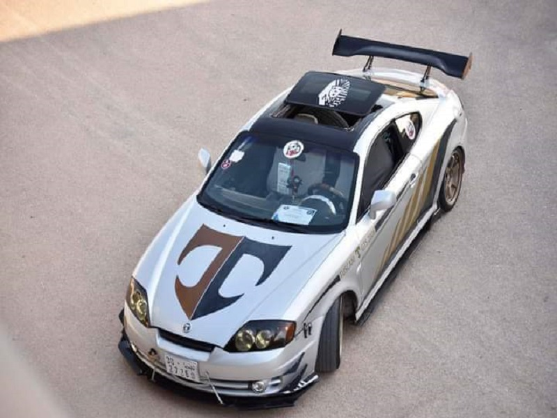
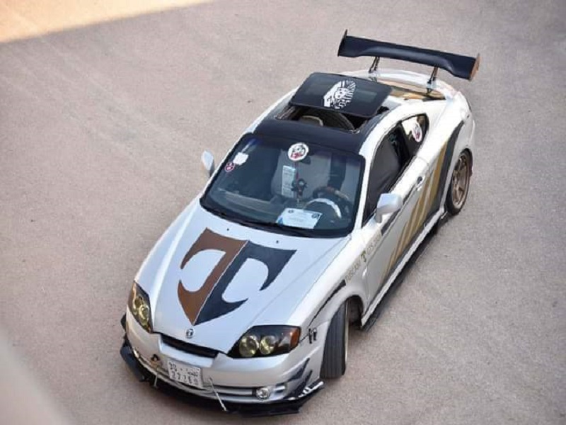

 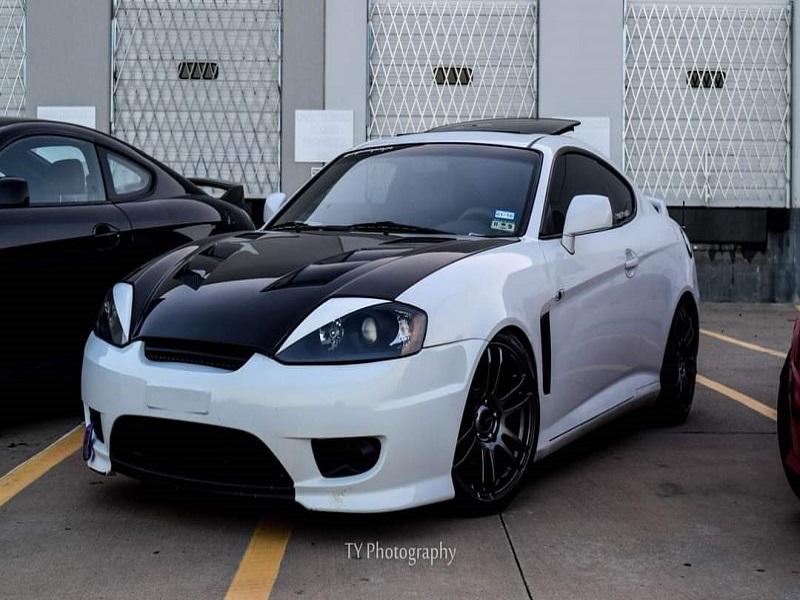
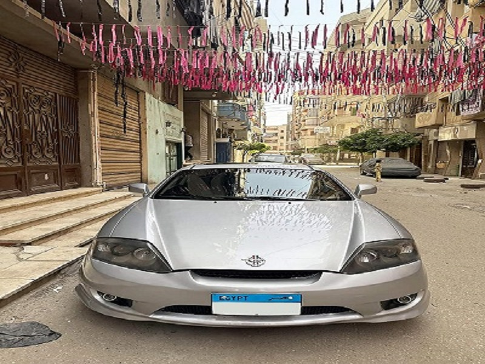
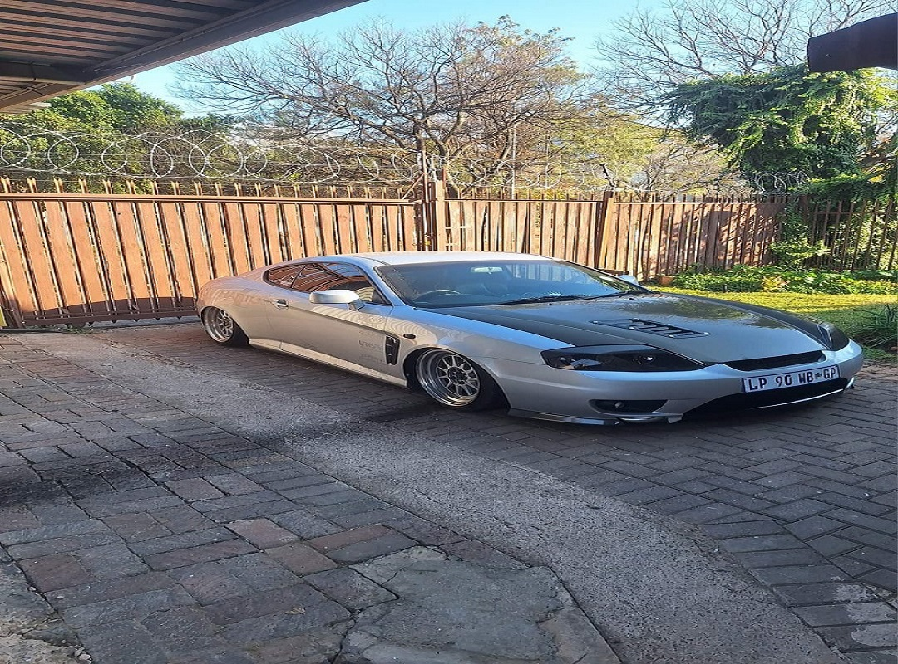
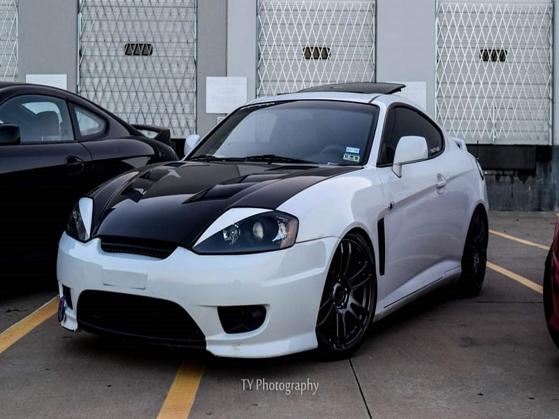
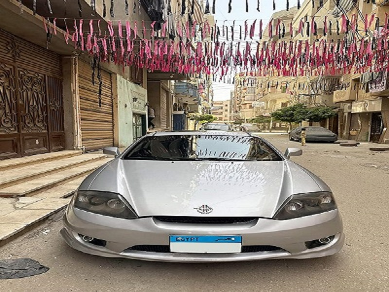
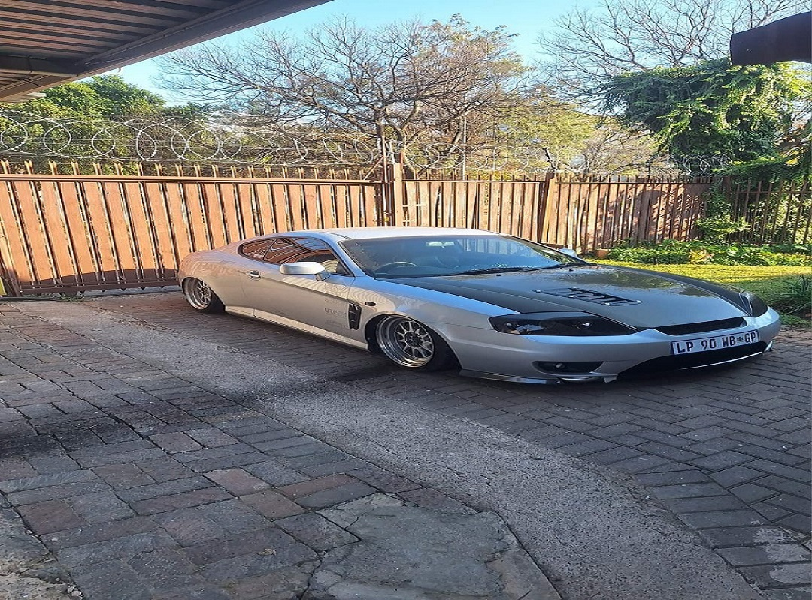
 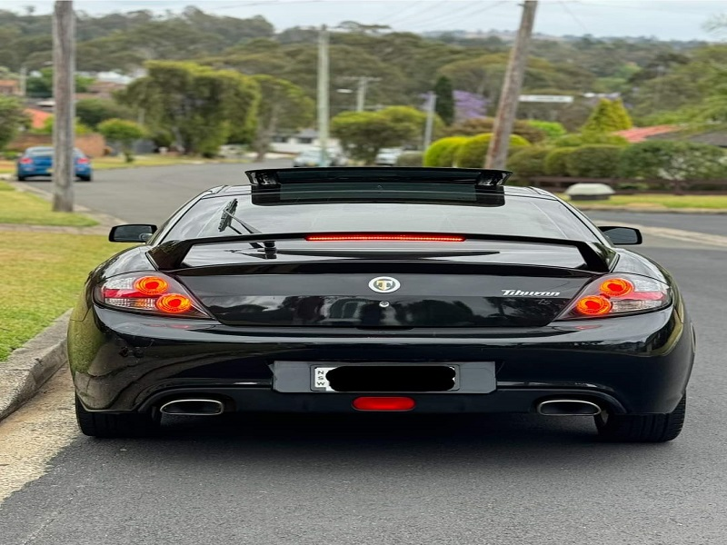
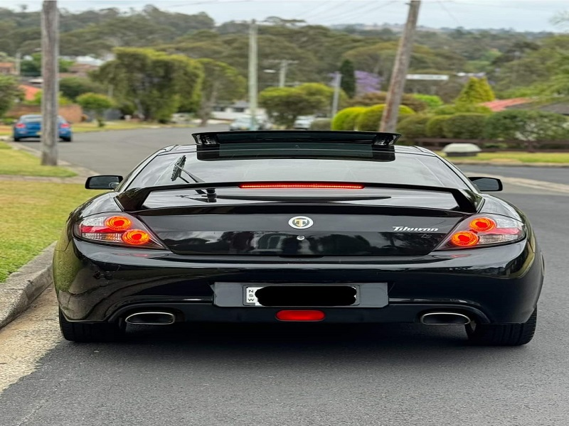

 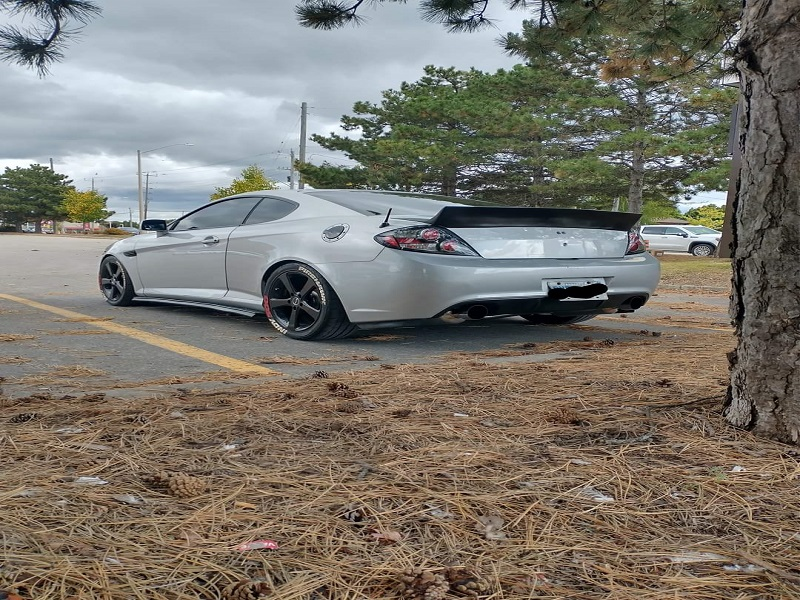
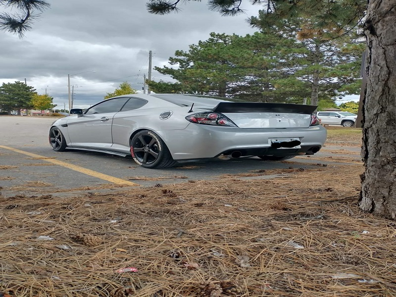


 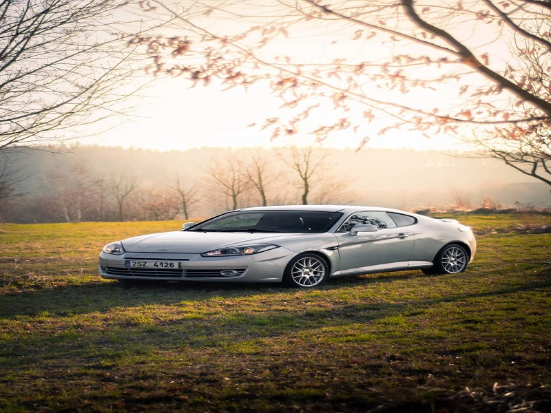
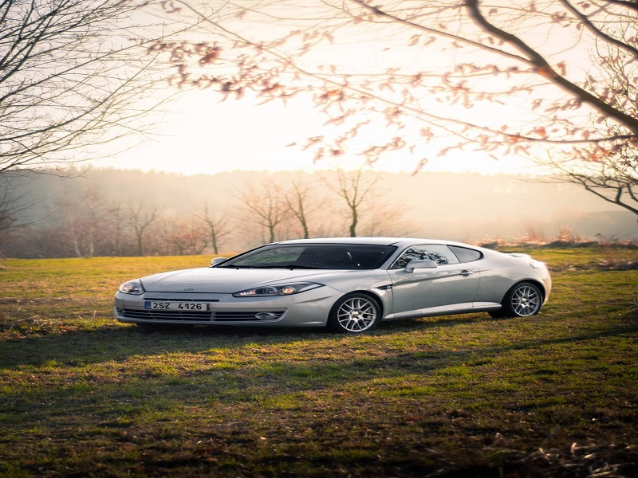


 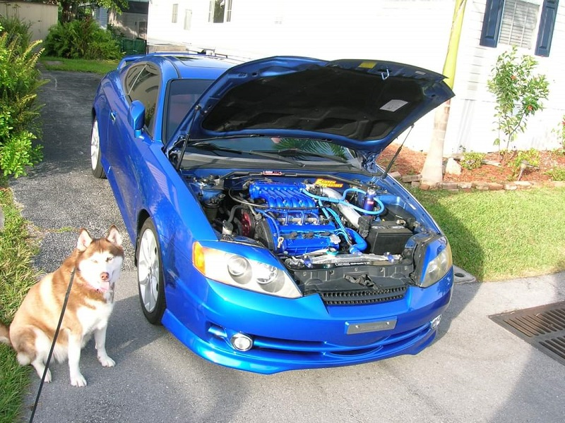
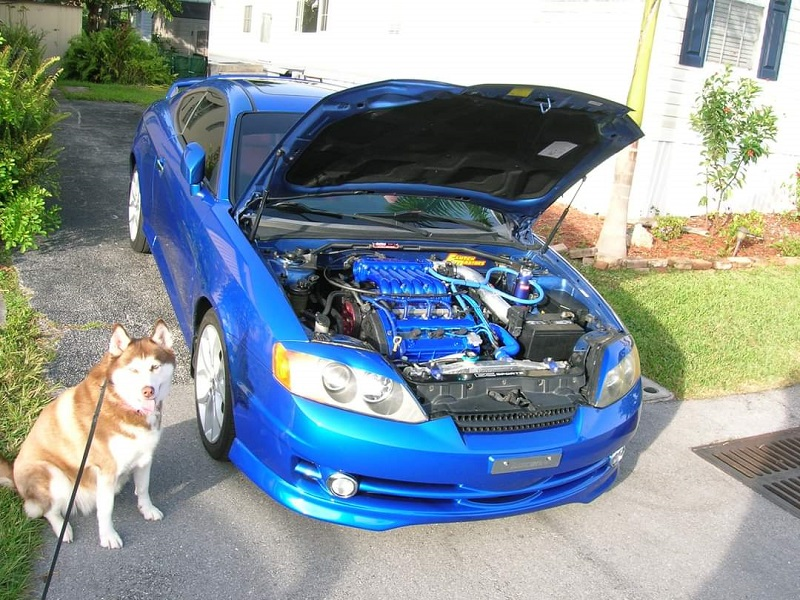


 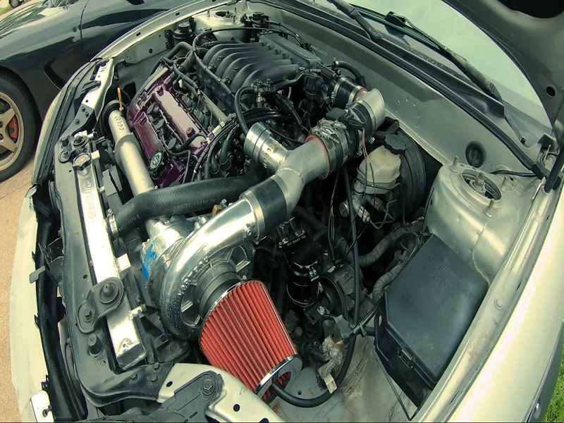
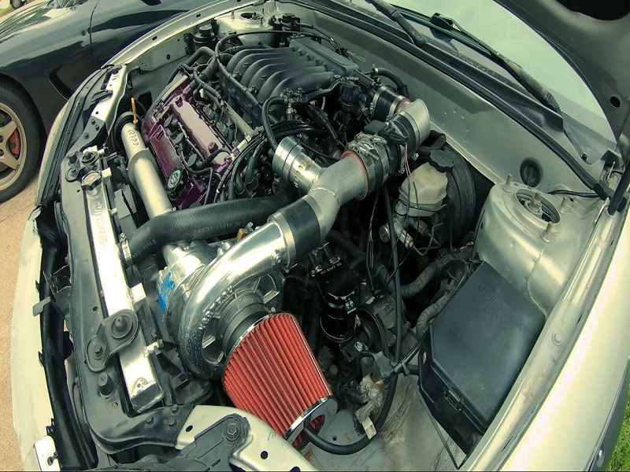